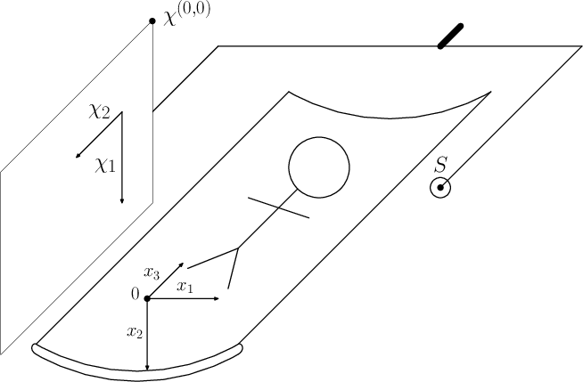

Working with KCT CBCT 2 Projective geometry and camera matrices to describe CT geometry
Before we define particular geometry corresponding to the flat panel detector CT trajectory, we need to know some theory about projective geometry and camera matrices. This will be the content of this post.
CT projections geometry
In the computer tomography, we project 3D object in $ \mathbb{R}^3 $ to the projector grid. Let's say it is a two dimensional grid that consist of rectangular pixels. Coordinates on the detector can be naturally described as the vectors in $ \mathbb{R}^2 $ since the projections are 2D images. The process of the X-ray projection is analogous to the pinhole camera model that projects the 3D scene onto the 2D plane. And therefore projective geometry is a good tool to study this correspondence.
Projective geometry
Projective space is a structure on top of an Vector space $\mathbf{V}$ that is not a vector space itself. For an introduction into the projective geometry, see class notes of Nigel Hitchin. I will follow some of its definitions
The projective space $\mathcal{P}(\mathbf{V})$ of a vector space $\mathbf{V}$ is a set of one dimensional subspaces of $\mathbf{V}$. The dimension of $\mathcal{P}(\mathbf{V})$ is $dim(\mathbf{V}) - 1$. Projective space of dimension $1$ is called projective line and projective space of dimension $2$ is called projective plane.
It is interesting to see in this definitions, that when we take the space $\mathbb{R}^3$, where the source is placed in its origin. We constract "a set of one dimensional subspaces of $\mathbb{R}^3$", which are all the lines through the origin representing all the rays going from the source. The number of lines with this characteristic is (almost) the same as the number of the points on the unit half sphere and I use this property, for derivation of the Cutting voxel projector. Here we first observe what uniquelly defines the flat detector CT (FDCT) setup and which properties can be described using projection matrices.
FDCT projection setup
Let's have the following FDCT setup

There are world coordinates described by vectors $\mathbb{x} = (x_1, x_2, x_3)$. There is a source at the position $\mathbb{S} = (s_1, s_2, s_3)$. And there is a Flat panel detector which is described by the point $\chi^{(0,0)}$, where is the point $(0,0)$ at the detector and by two orthogonal vectors $\chi^1$ and $\chi^2$. Let's say that spacing of the detector pixels is determined by the length of the vectors $\chi^1$ and $\chi^2$ so that the size of the pixels is $|\chi^1| \times |\chi^2|$. Let's also say that pixel boundaries have zero thickness and where one pixel ends, another starts. We have to specify how many pixels is there in the directions $\chi^1$ and $\chi^2$ and we have complete FDCT setup.
By convention described also in previous post, the $x_3$ axis parallel with the axis of the rotation and $x_2$ axis goes from the top (above scanned subject) to bottom (under scanned object).
Let's mention there is one special ray from the source, which is perpendicular to the detector. We usually call this ray principal ray and the point, where this ray hits the detector principal point. In some applications it might be convenient to shift the principal ray outside the center of the detector, see for example work on quarter detector offset shifting to improve resolution.
Common FDCT setup simplifications
The setup described is too general for many projectors implemented in KCT package. The only exception is Siddon projector, which can be used with the geometries of this generality.
TR and TT projectors by design and CVP projector by current implementation use the following simplification of the geometry. They expect, that the vector $\mathbb{\chi^2}$ is always parallel to $\mathbb{x_3}$ cartesian vector. That implies then that the normal to the detector, which can be obtained e.g. as a normalized cross product $\mathbb{\chi^1} \times \mathbb{\chi^2}$ is orthogonal to $\mathbb{x_3}$.
This exclude trajectories, where the device rotates along axis not parallel with $\mathbb{x_3}$.
Camera matrix to describe FDCT setup
By the camera matrix we describe the mapping from the point $\mathbb{x} = (x_1, x_2, x_3)$ to the point on the detector given by $\mathbb{P}=(p^1, p^2)$. The point $\mathbb{x}$ will be projected onto the point $\chi^{(0,0)} + p^1 * \chi^1 + p^2 * \chi^2$. Interestingly, we don't need to know precise values of vectors $\chi^{(0,0)}, \chi^1, \chi^2$ as when we place the vector $\chi^{(0,0)}$ anywhere on the ray from the source to that vector, and scale accordingly also the vectors $\chi^1$ and $\chi^2$, we obtain obtain the same mapping between $\mathbb{x} = (x_1, x_2, x_3)$ and $\mathbb{P}=(P^1, P^2)$. In the normal detector we can not change size of the pixels, so this is just a theoretical consideration. However this has an implication that when having camera matrix in the sense of beeing a linear mapping between projective space of dimension 3 and projective space of dimension 2, we can not tell how far from the source the detector is or how far the pixels are spaced from each other. When to the camera metrix adding information of one pixel dimension or distance from projector to source, system is fully defined.
Why talking about abstract projective elements? Camera matrix is at the end of the day matrix from $\mathbf{R}^{3x4}$. Scaling by nonzero constant do not change its properties as a projective element. Therefore using this fact we can encode source to detector distance into the matrix. On the other hand we don't need this information in order to make CT projection or reconstruction anyway. Camera matrix does not tell us, what is the size of the detector and this information must be provided to the reconstruction software by other means. For example to do a projection using KCT framework, we need to specify
--projection-sizex UINT Needs: --projection-sizey
X dimension of detector in pixel count, defaults to 616.
--projection-sizey UINT Needs: --projection-sizex
Y dimension of detector in pixel count, defaults to 480.
Creating camera matrices for particular setup
The Camera matrix is relatively well described on Wikipedia. So let's construct set of camera matrices to be used in the KCT framework. To store them, we use DEN file format of the size float64 with $(dimx, dimy, dimz)=(4,3,n)$, where n is number of the configurations in given FDCT trajectory.
Let's have the following setup. Zero of the world coordinates coincide with the volume center. Source and detector rotate along $x_3$ axis and $\chi_2$ is parallel with $x_3$. Principal ray at every position of the trajectory hits the detector. The distance from the source to theisocenter is $I = 749mm$ and the distance from source to the detector is $A=1198mm$. Trajectory consist of $360$ views and in the view $\omega$ the normal to the detector pointing towards the source forms the polar angle with respect to $x_1$ and $x_2$ axes so that $n_\omega = (cos(\omega), sin(\omega))$. Finally let's have $PX\times PY$ = $0.616mmx0.616mm$ pixels and $M\times N = 616x480$ grid.
From this information we construct camera matrix for given projection setup. First we perform a transformation to the local coordinate system related to the given view $\omega$ that will be more convenient to work with. In the terminology of projection matrices, we understand the point in 3D as a point of projective space of dimension 3, which can be represented by the vector $(x_1, x_2, x_3, 1)$. We use this just as a vehicle to encode source position into the projection matrix not to exploit some topological properties of $\mathbb{R}^4$, but let's respect this usual way how to construct projection matrices. So that linear transformations in this kind of space will be transformations between $\mathbb{R}^4$ encoded by means of matrices from $\mathbb{R}^{4\times4}$.
First we just perform a rotation of the axes $x_1,x_2,x_3$ so that $x_1',x_2',x_3'$ will again form Cartesian coordinate system but rotated towards our setup. Let's identify positive direction of $x_3'$ with positive direction of $\chi^2$ by $x_3'=-x_3$. We rotate remaining two axes in the way that $x_2'$ unit vector will be the normal vector $n_\omega$ and $x_1'$ will be colinear with $\chi^1$ on the detector. So we use the following projective element $$ \mathbf{X}_1 = \begin{pmatrix} -\sin{\omega}& \cos{\omega} &0 &0 \\ \cos{\omega}& \sin{\omega}&0 &0 \\ 0&0&-1&0 \\ 0&0&0&1 \end{pmatrix}. $$
Now the $\mathbf{X}_1$ took us into a new coordinate system, let's live in it and shift its origin to $S'$. First let's relize that coordinates of $S' = (0, \sqrt{s_1^2+s_2^2}, -s_3, 1)$. Now we can do a shift by means of the next projective element $$ \mathbf{X}_2 = \begin{pmatrix} 1&0&0&0\\ 0&1&0&-\sqrt{s_1^2+s_2^2}\\ 0&0&1&s_3\\ 0&0&0&1 \end{pmatrix} $$
So we constructed projective element such that $$ \begin{pmatrix} x_1'' \\ x_2''\\x_3''\\1 \end{pmatrix} = \mathbf{X}_2 \mathbf{X}_1 \begin{pmatrix} x_1\\x_2\\x_3\\1 \end{pmatrix}. $$
Now let's construct the projective element from 3D transformed space to the detector. But simpler detector with the same orientation as our flat panel but with the zero positioned at principal point and moreover detector such, that unit vector $x_3''$ from principal point projects to 1 in $\chi^2$ direction and unit vector $x_2''$ project to 1 in $\chi_1$ direction. This detector must have focal length $A$ so that we can construct the following projective element $$ \mathbf{E} = \begin{pmatrix} 1&0&0&0\\ 0&0&1&0\\ 0&-\frac{1}{A}&0&0 \end{pmatrix} $$ Notice sign to correct for the fact that $x_2''$ points from detector to source and not vice versa. We know, that the unit vectors project to the distance $1/PX$ or $1/PY$ respectivelly. Let's add another projective element to correct for the pixel sizes $$ \mathbf{A}_1 = \begin{pmatrix} \frac{1}{PX}&0&0\\ 0&\frac{1}{PY}&0\\ 0&0&1 \end{pmatrix} $$
Here is obvious that the operation of cutting pixels into $kxk$ subpixels can be realized by matrix $$ \begin{pmatrix} k&0&0\\ 0&k&0\\ 0&0&1 \end{pmatrix} $$ and splitting is realized by inverse operation $$ \begin{pmatrix} \frac{1}{k}&0&0\\ 0&\frac{1}{k}&0\\ 0&0&1 \end{pmatrix}. $$
To shift the $\chi^{(0,0)}$ to its intended position let's do this \begin{equation} \mathbf{A}_2 = \begin{pmatrix} 1&0&\frac{N-1}{2}\\ 0&1&\frac{M-1}{2}\\ 0&0&1 \end{pmatrix} \end{equation}
In the KCT we use the convention that integer projection coordinates denote center of given pixel. Therefore zero is achieved at the center of corner pixel.
Finally we obtain projection matrix that for given position in the volume provides the position on the projector $$ \mathbf{P} = \mathbf{A}_2 \mathbf{A}_1 \mathbf{E} \mathbf{X}_2 \mathbf{X}_1. $$
Python implementation
We have yet mastered the theory so let's produce the set of camera matrices for given trajectory.